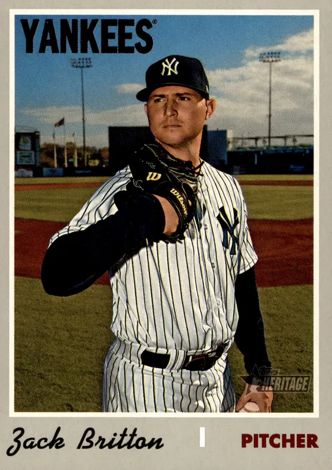

Zach Britton
Career Highlights & Facts
(Facts are AI-generated and may require verification)
- Recorded a 0.54 ERA in 2016, the lowest in MLB history for a pitcher with at least 50 innings.
- Set an American League record by converting 60 consecutive save opportunities from 2015 to 2017.
- Began career as a starting pitcher before converting to a reliever in 2014.
Would you like to find out more about Zach Britton?
Career Totals
| WAR | W | L | ERA | G | GS | SV | IP | SO | WHIP |
|---|---|---|---|---|---|---|---|---|---|
| 14.0 | 35 | 26 | 3.13 | 442 | 46 | 154 | 641.0 | 532 | 1.264 |
Statistics via Baseball-Reference.com
The Original Clue